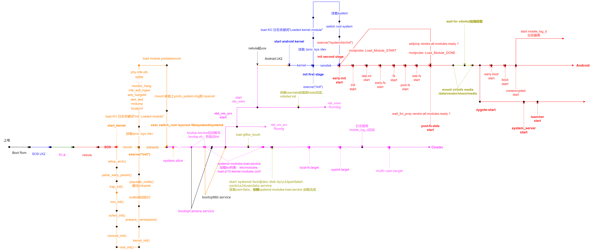

24 启动时序：从上电到业务可用
这章以用户于 2026-09-20 补充的启动时序图为直接证据，补充第 14 章的启动解释。它描述图示项目的启动组织方式，不修改原有架构，也不把这些服务名、依赖或颜色推广为所有 MT8676 / MT8668 版本的标准配置。
先记住读图规则
颜色表示不同启动阶段；分出的多条执行线才表示同时推进的执行路径。 同一条线上颜色改变，是进入另一阶段，不能据此认定启动了另一个线程。多条线在时间上有重叠，表示并行路径；是否同一时刻在不同 CPU 核上真正执行，还需要调度轨迹证明。
图中的竖向虚线多用于把文字标注连接到里程碑，不应把每根虚线都当成独立执行线程。长箭头也不是固定时长承诺。这张图没有统一时间刻度、实测时间戳、CPU 编号或完整调度轨迹，不能从线段长度计算启动耗时。
图表进入可见区域后生成。 颜色区分阶段，多条明确分支线表示并行推进；虚线文字表示依赖条件。此图按原图抽取主流程并拆分阅读，合并了同类函数/trigger，未表达精确耗时、CPU 调度或所有 unit 依赖。bootopCamera.service 原图依赖边不清，不新增它到首帧的连线。详细节点与限制见第 24 章和原图。 展开 / 收起图表
查看 Mermaid 源码
flowchart LR
subgraph entry["共同启动链：同一线变色表示阶段切换"]
lk2["SOS LK2"] --> tfa["TF-A"] --> neb["nebula"] --> kernel["SOS kernel<br/>start_kernel"] --> init["initramfs / execve /init"] --> root["挂载 Yocto_system.img 到 /sysroot<br/>switch_root → systemd"]
end
subgraph host["SOS 用户空间主线"]
boot["system.slice / bootop.service<br/>bootop.sh"] --> mod["systemd-modules-load.service<br/>10-kernel-modules.conf"] --> targets["local-fs / sysinit / multi-user targets"] --> cluster["Cluster 方向继续运行"]
end
root --> boot
subgraph vm["虚拟机相关并行路径"]
srv["nbl_vm_srv start"] --> srvrun["nbl_vm_srv Running"]
vmm["nbl_vmm start"] --> vmmrun["nbl_vmm Running"]
end
boot --> srv
srv --> vmm
subgraph android["Android 启动路径"]
alk2["Android LK2"] --> ak["Android kernel"] --> first["first stage init<br/>基础挂载 / 挂载 system / switch root"] --> second["execve /system/bin/init<br/>second stage init"] --> actions["early-init / init / late-init<br/>early-fs / fs / post-fs / late-fs"] --> post["post-fs-data<br/>wait_for_prop vendor.all.modules.ready 1"] --> shared["等待 virtiofsd<br/>挂载 /data/vendor/share/media"] --> late["early-boot / boot / nonencrypted"]
end
vmm --> alk2
subgraph loader["模块加载并行路径"]
start["modprobe Load_Module_START"] --> done["Load_Module_DONE"] --> ready["setprop vendor.all.modules.ready 1"]
end
second --> start
ready -. "满足等待条件" .-> post
subgraph share["Host 共享文件系统前置条件"]
data["userdata 检查与挂载<br/>按 unit / mount 日志核实"] --> virt["virtiofsd init"]
end
mod -. "图示依赖" .-> data
virt -. "后端就绪条件" .-> shared
subgraph framework["Android 框架分支"]
z["zygote-start"] --> ss["system_server start"] --> launcher["launcher start"]
end
shared --> z
late --> log["mobile_log_d 日志服务"]
classDef early fill:#dcecff,stroke:#2467bf,color:#102847
classDef firmware fill:#f0dbff,stroke:#a51cd0,color:#40134e
classDef sosKernel fill:#fff0d2,stroke:#d98200,color:#5c3500
classDef hostStage fill:#f8ddff,stroke:#b100c0,color:#42004a
classDef androidStage fill:#ffe2e2,stroke:#c52222,color:#650a0a
classDef waiting fill:#f6f1be,stroke:#8a8000,color:#454000
class lk2,ak,first early
class tfa,neb firmware
class kernel,init,root sosKernel
class boot,mod,targets,cluster,srv,srvrun,vmm,vmmrun hostStage
class second,actions,post,late,start,done,ready,z,ss,launcher,log androidStage
class data,virt,shared waiting查看源文件原图作对照
原图完整保留。建议点击原图放大，先沿下方 SOS 主线读到 systemd，再回到分叉处看虚拟机和 Android。图中的拼写与目标机版本应以启动脚本、unit 文件和 init rc 核实；这里不默默修正成另一套项目命名。
第一步：辨认阶段与执行路径
| 观察对象 | 原图中可以确认的内容 | 新手应怎样理解 |
|---|---|---|
| SOS LK2、TF-A、nebula | 启动链最左侧的连续阶段 | 先沿同一主线阅读；颜色变化本身不意味着并行 |
| SOS kernel 与 initramfs | 橙色为主的内核、早期用户空间工作 | 系统逐步建立运行环境并准备根文件系统 |
| SOS systemd 用户空间 | 紫色为主的服务组织，主线继续到 Cluster | 系统可以组织多个服务；进程运行与业务可用要分别判断 |
| nbl_vm_srv / nbl_vmm | 从主流程分出的持续运行线 | 与主线形成并行路径；不能把它们解释为主线停止后的串行步骤 |
| Android kernel / first stage init | Android LK2 后蓝色为主的阶段 | Guest 开始建立自己的内核与早期用户空间 |
| Android second stage init | 红色为主的 init action 与后续框架工作 | 按触发点推进，并在依赖处等待 |
| 黄色说明与连线 | userdata、virtiofsd、挂载及等待注释 | 它们强调前置条件，不是凭颜色定义出的第三套 OS |
颜色只结合本图局部图例和文字识别，不能建立“蓝色必然等于某个 OS”的全局规则。例如 SOS LK2 与 Android kernel 都出现蓝色，TF-A 与 SOS 用户空间也使用相近的紫色。
第二步：沿 SOS 主线理解基础环境
图示从 SOS LK2、TF-A、nebula 进入 SOS 内核。start_kernel 附近列出 setup_arch()、parse_early_param()、trap_init()、mm_init()、sched_init()、console_init()、rest_init() 等观察标签。这些标签帮助定位启动区段，图的排版不等于精确函数调用栈，也不是每个函数都在独立线程并行运行。
之后图中标出 kernel_init()、populate_rootfs()、prepare_namespace() 和 execve("/init")。新手可以把这一段理解为：内核建立基本执行环境，准备早期根文件系统，把控制交给早期用户空间。要分析某次实际启动卡在哪一步，需要在相同构建版本的内核日志中找到对应里程碑。
早期用户空间附近标有挂载 /proc /sys /dev、加载 predatamount 模块、将 Yocto_system.img 挂载到 /sysroot，以及 switch_root /sysroot /lib/systemd/systemd。原图给出的模块示例包含 phy-mtk-ufs、optee、monitor_hang、mtk_wdt_hyper、aee_hangdet、aee_aed、mrdump、bootprof。这是一份图示配置清单，不能直接当作另一项目必须加载的模块集合。
这一阶段的关键问题是：根文件系统是否准备好，预期模块是否加载完成，是否确实进入 systemd。单独出现 init: Loaded module 日志，只能说明对应模块加载点，不能替代所有设备和业务 ready 的判定。
第三步：理解 systemd 与虚拟机分支
进入 systemd 后，图中标出 system.slice、bootop.service / bootop.sh、systemd-modules-load.service，以及 local-fs.target、sysinit.target、multi-user.target。模块清单位置标为 /etc/modules-load.d/10-kernel-modules.conf。
target 是组织和同步启动单元的节点。图上先后位置给出阅读顺序，精确的强制依赖仍应检查对应版本 unit 的 After=、Before=、Requires=、Wants= 与实际日志。不能仅凭横向位置就新增一条源码中不存在的依赖。
原图从 SOS 启动流程分出 nbl_vm_srv 和 nbl_vmm 运行线，并连接到 Android LK2 / kernel 的启动。主线继续朝 Cluster 推进，而虚拟机相关路径也继续运行。这正是“多条线表示同时运行”的读法：SOS 服务链和 Android 启动链可以重叠推进，遇到跨域依赖时再等待。
图中还出现 bootopNbl.service 和 bootopCamera.service。其中 bootopCamera.service 没有足够清楚的完整依赖边，故这里只记录其出现，不编造它与 Android 首帧或 Cluster ready 之间的严格先后关系。
第四步：跟随 Android 的两阶段 init
Android 分支由 Android LK2 进入 kernel，随后图示 execve("/init")、first stage init、挂载基础文件系统、挂载 system、switch root，以及 execve("/system/bin/init") 进入 second stage init。
second stage 后图中标出 early-init、init、late-init、early-fs、fs、post-fs、late-fs、post-fs-data、early-boot、boot、nonencrypted 等触发点。这些是阅读 init action 的定位标签，不能把所有同名触发点都当成独立常驻进程。
zygote-start、system_server start、launcher start 连接到后续框架路径。理解时要分别回答：进程是否创建、系统服务是否完成初始化、桌面是否显示、目标业务是否具备依赖。Launcher 出现不等于 Camera、音频、车辆信号等全部 ready。
第五步：找到真正的等待门槛
模块完成属性
原图明确标出 modprobe: Load_Module_START、Load_Module_DONE、setprop vendor.all.modules.ready 1，以及 post-fs-data 附近的 wait_for_prop vendor.all.modules.ready 1。
解释这段时应区分生产者和消费者：模块加载路径完成后设置属性，等待方观察属性达到目标值后继续。属性写入成功只能按该项目对它的定义说明“这一批模块加载已完成”；设备探测成功、节点可用、服务 ready、首帧或首声仍要独立验证。
排查时至少收集：加载开始与结束、属性变化时间、等待方进入与退出等待的时间、对应 init rc 和模块清单。若属性已置位但业务仍不可用，继续向设备探测和服务状态查，不能反复归因于同一个等待点。
userdata、virtiofsd 与共享媒体挂载
原图说明 userdata 挂载依赖相关模块加载完成，并将 virtiofsd init 与 userdata 挂载关联；Android 侧有等待 virtiofsd 启动以及挂载共享媒体到 /data/vendor/share/media 的标注。
新手应把它拆成三个可核查条件：Host 侧 userdata 是否可访问，virtiofsd 是否按正确配置提供后端，Guest 侧目标挂载是否成功且可访问所需内容。后端进程存在不能单独证明 Guest 挂载成功；目录存在也不能证明当前会话已经挂载了正确的共享内容。
图中的 unit 标签指向 systemd-fsck@dev-disk-by\\x2dpartlabel-yocto\\x2duserdata.service。不要把 fsck 服务名直接等同于所有挂载动作；实际 fsck、mount unit 和启动脚本之间的关系应以目标机 unit 文件为准。原图黄色文字表达的是这段 userdata 依赖，需要分别验证检查完成与挂载完成。
第六步：把启动完成拆成业务里程碑
| 里程碑 | 能证明什么 | 还不能证明什么 |
|---|---|---|
| 内核进入用户空间 | 已推进到用户空间入口 | 所有模块、文件系统和外设已可用 |
| systemd unit active | unit 达到其定义的活动状态 | 业务服务对所有请求都 ready |
| nbl_vmm Running | 图示虚拟机管理路径运行 | Guest 系统和业务都已初始化 |
| vendor.all.modules.ready=1 | 项目定义的模块完成属性满足 | 相机已经产生有效的新帧 |
| 共享目录挂载完成 | 指定挂载操作成功 | 标定、权限、内容版本和消费者都正确 |
| Launcher 出现 | 桌面相关路径已有可见结果 | 首次倒车、首次导航播报都满足要求 |
| 业务首个有效结果 | 对该业务有直接完成证据 | 其他业务也已完成或恢复能力已验证 |
对于倒车影像，建议沿“挡位有效 → 请求被接受 → 所需设备/服务 ready → 首个新鲜 buffer → 合成/present → 用户可见且标定正确”记录里程碑。对于音频则沿“策略允许 → PCM 推进 → route 生效 → DSP/Codec/功放可用 → 实际首声”记录。这些是验证方法，具体阈值需要项目要求与实测数据。
实践：Android 停在 post-fs-data 时怎么分析
先写现象：哪次启动、哪个软件版本、Android 最后推进到哪里、SOS 是否继续推进、是否复现。不要一开始就写“并行启动导致卡死”。
- 保存 SOS 与 Android 的启动日志，并记录各自时钟类型。未经映射的跨 OS 时间戳不直接相减。
- 检查等待的是模块完成属性、文件系统、virtiofsd，还是其他 init action；确认准确条件与等待方。
- 查生产者是否开始、是否完成、是否发布了消费者正在等待的状态，状态是否属于本次启动。
- 若条件已经满足，检查消费者是否观察到状态变化以及后续失败点。把超时、失败和未采到日志分开。
- 复核版本对应的 unit / rc / 模块清单；提出最小验证，不直接删除等待条件或强行置位 ready。
- 用业务首个有效结果验收恢复；另行核查重启、休眠唤醒、异常恢复，避免只验证一次冷启动。
建议输出一张表：启动会话、域、时钟、事件、前置条件、证据位置、结论、待确认项。未知耗时写“缺少可比较时间戳”，不从原图估算毫秒数。
与已有材料一起阅读
- 14 启动、休眠与升级：生命周期职责和恢复方法。
- 07 SOS 与 Yocto：服务、显示与硬件相关职责；以站内目录中的同编号章节为准。
- 20 时间与跨域通信：跨域日志比较的时钟前提；以同编号章节为准。
- 22 来源与覆盖范围：逐页原文和版本追溯入口。
本章直接证据：用户提供的启动图及其明确读图规则。操作系统术语解释用于教学；图未给出的依赖、阈值、线程归属和平台覆盖范围均保留待验证。